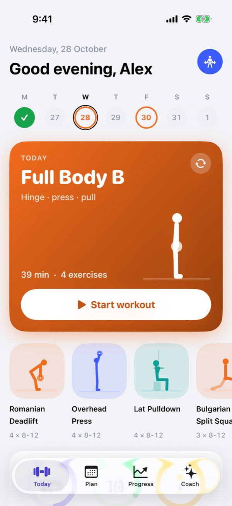
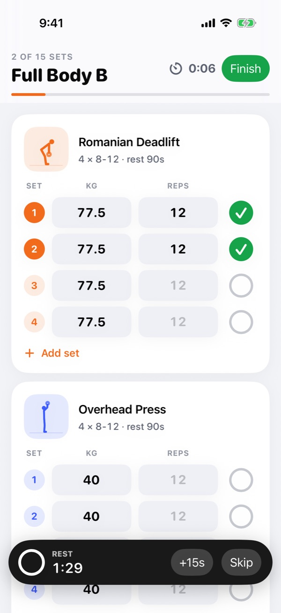
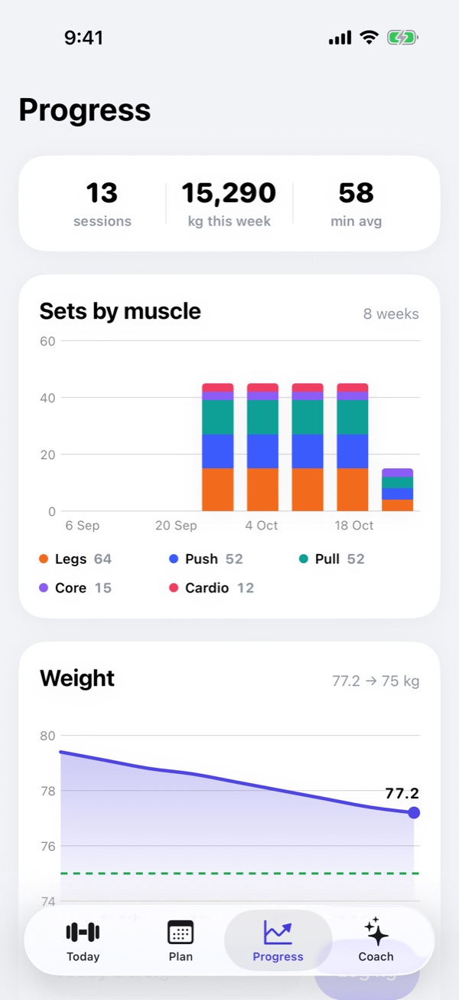
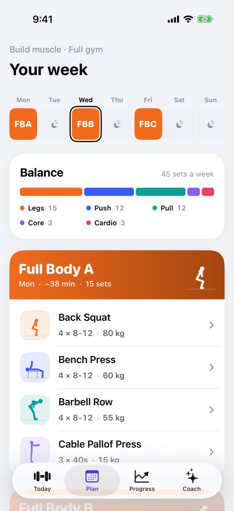
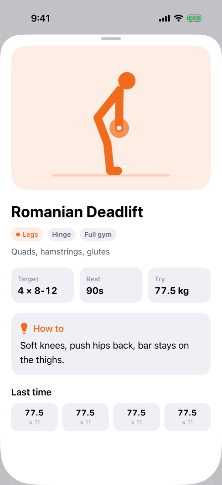
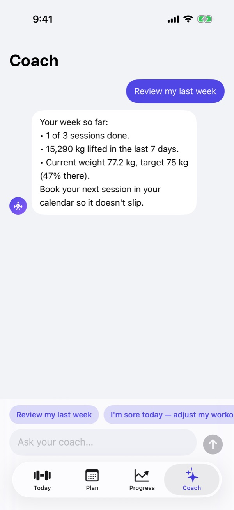

A training app for iPhone. Tell it your goal, the days you can train, your level and your equipment, and it writes your weekly plan. It shows every exercise as an animated figure, logs your sets with a rest timer, suggests the next weight, and tracks your progress.



"I want to build muscle" or "I want to lose fat" is easy to say. Turning it into sets, reps, rest and a weekly split is what a personal trainer is paid for. Without one, people copy a random routine, never add weight, and stop after a few weeks.
Fitness apps offer hundreds of exercises. Choosing four of them, and how many sets for this goal, is still up to you.
Exercise videos are heavy, inconsistent in style, and hard to follow between sets with sweaty hands.
Progress comes from slowly adding weight. Nobody remembers what they lifted last Tuesday.
Four answers decide everything. The goal sets the dose: build muscle is 4 × 8–12 with 90 s rest, get stronger is 5 × 5 with 3 minutes, and lose fat or endurance get shorter rests and a conditioning finisher. The number of days picks the split: full-body sessions for up to three days, upper/lower for four, push/pull/legs for five or more. Level adds or removes a set, and equipment (full gym, dumbbells or bodyweight) decides which exercises are used.
Each workout is defined as patterns (squat, hinge, push, pull, lunge, carry, core), and each pattern is then filled with the best exercise for your equipment. Switch from the gym to dumbbells at home and the week keeps its shape; only the exercises change. Colours on the plan show which muscles each day trains.
Editing the goal, days, level or equipment rebuilds the plan straight away. Changing only the target weight or reminders leaves the plan alone. Workout reminders are set for each training day at the time you choose.


Instead of videos, each movement is an animated side-view figure defined by joint angles: a start pose, an end pose, and a smooth loop between them. Limb lengths stay fixed while it moves, so the figure never stretches. All 42 exercises share one visual style, the app ships no video, and with Reduce Motion turned on the figure holds still in its key position.
Today's card shows the day's exercises as a row of moving figures. Tapping one opens its page: the figure, the target, the rest, the weight to try, a one-line cue and what you lifted last time. The demo is never more than a tap away, before or during a workout.
If you hit every target rep last time, the next session suggests a small increase: 2.5 kg on upper-body lifts and 5 kg on legs (double in pounds). If you missed reps, it keeps the same weight. The suggestion is filled into every set, so most sets are logged by typing only the reps.
There is no separate timer to start. Ticking a set starts the rest timer for that exercise, shown as a bar at the bottom with +15s and Skip. When rest ends the phone gives a haptic, and if it is locked, a notification says it is time for the next set.
The Progress tab charts working sets per muscle group for each of the last eight weeks, because weekly sets are what decide whether a muscle grows. Next to it: body weight against your target, sessions, weekly volume and best lifts.

The Coach tab answers questions like "I'm sore, adjust today" or "review my week". Each question is sent to Apple's on-device model together with your plan, your last five sessions, and today's water, sleep and energy, so the answer is about your numbers, not generic advice. It is told to keep answers short and never to diagnose an injury.
Apple Intelligence is not on every iPhone. When it is unavailable, the coach says why (unsupported device, switched off, still downloading) and answers the common questions with built-in tips that still use your data: protein from your body weight, sessions done this week, last night's sleep.
There is no account and no server. Plans, workouts and check-ins are saved in a file on the phone with iOS data protection, and the coach runs on the device.
A new install opens with an example trainee so the app is never empty on first look, and asks for a goal before anything is logged for real. The screens on this page are captured by an automated UI test that taps through the app, so they can be re-taken after every design change.
Working in the iOS 26 Simulator: goal setup, the generated plan, logging with the rest timer, progress charts and the coach. The trainee is sample data.
Not yet done: running it on a physical iPhone over a few weeks of real training, which is the only real test of the plan and the weight suggestions.
A trainer's knowledge is mostly a set of rules: how many sets for this goal, which split for this many days, when to add weight. Putting those rules in the plan builder and the weight suggestion meant the screens could stay simple. The user answers four questions and taps a tick; the app does the programming.